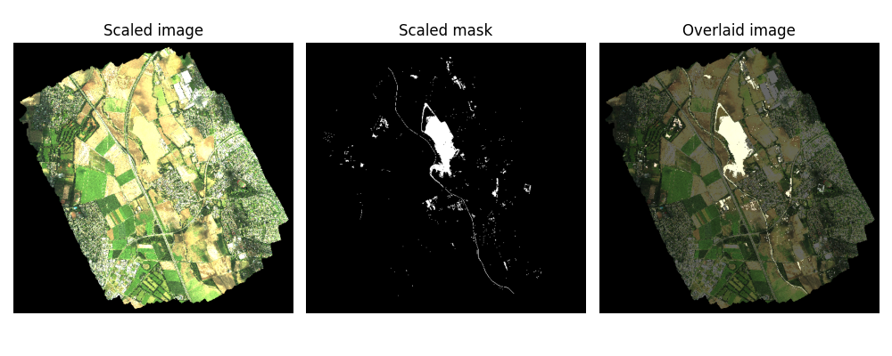
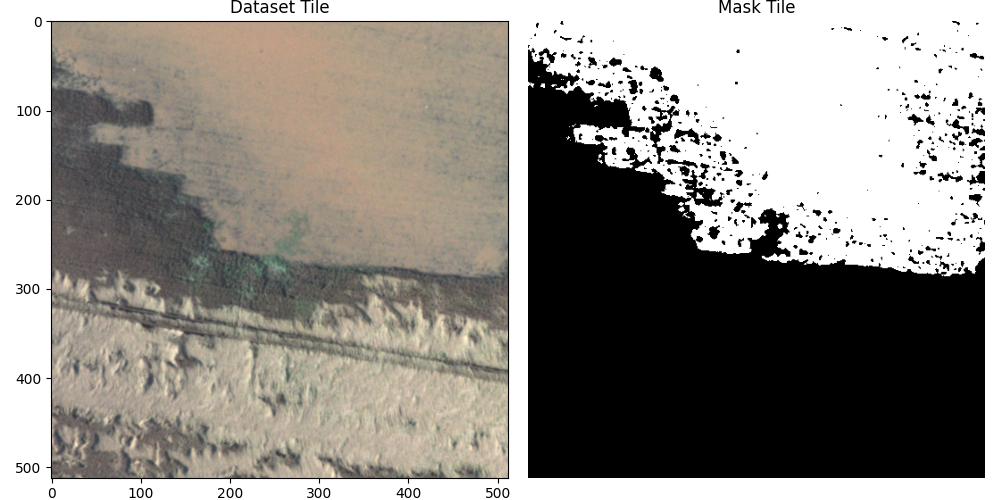

Flood Detection in Remote Sensing Images
In this post, I explore how to implement flood detection models trained on drone imagery. Based on recent research using the BlessemFlood21 dataset, I walk through the process of preparing the dataset and training the neural networks.
Climate change has increased the number and intensity of natural disasters worldwide, including across Europe. Among them, floods are particularly brutal. I had firsthand experience when my hometown flooded overnight, destroying houses and cars. Seeing it up close made the problem feel a lot less abstract.
The good news is that technology has come a long way, and researchers are now working hard to build better tools for flood detection, which could help warn people and coordinate humanitarian aid during future flood events. Recently, I have been reading a few papers to understand how these systems work. But reading is not enough, so I decided to implement the ideas from these papers.
In this post, I will use the BlessemFlood21 dataset for flood detection (semantic segmentation). The authors of the paper do not provide any code, so I will implement everything from scratch. Some of the decisions I make may differ from those made by the authors. All the code for this blog post can be found here.
Setting Up the Environment
The first thing we need to do is install the libraries we will be using. As always, I recommend creating a new environment first and installing everything inside it. Use the following commands to install the required packages:
uv venv envFloodDetect
source envFloodDetect/bin/activate
uv pip install torch torchvision matplotlib rasterio
If you are not familiar with uv or don’t use it, you can install the packages with this instead:
python -m venv envFloodDetect
source envFloodDetect/bin/activate
pip install torch torchvision matplotlib rasterio
We also need to download the dataset from https://fordatis.fraunhofer.de/handle/fordatis/379.
Dataset
The imagery in the BlessemFlood21 dataset was acquired during the 2021 Erftstadt-Blessem flooding. It includes a georeferenced RGB image (~3.2 GB), supplemented with a water mask (~21.55 MB). To understand what it looks like, I opened it using QGIS (an open-source geographic information system software). Below, I show the complete image/dataset on the left and the mask overlaid on the image on the right.
If you do not have QGIS, you will need to do all of this directly in Python. It’s important to keep in mind that the images are very large, and QGIS handles them efficiently by avoiding loading the entire image into RAM. It does this by opening the image at a lower resolution, using windows (i.e., clipping the image), or both.
To replicate the outputs above, we need to do the same in Python (or load the entire image into RAM, which could cause problems). For this, I’ll use the rasterio library.
import numpy as np
import rasterio
# Paths to the rgb and mask images
rgb_file_path = '../datasets/ortho_blessem_20210718_rgb.tif'
mask_file_path = '../datasets/ortho_blessem_20210718_mask.tif'
with rasterio.open(rgb_file_path) as src, \
rasterio.open(mask_file_path) as src_mask:
# Check that the image and the mask are both the same size
assert src_mask.width == src.width and src_mask.height == src.height
# Define the shape of the output to be read. It will use a lower resolution.
out_height = 512
out_width = out_height * src.width // src.height # Maintains the aspect ratio
out_shape = (3, out_height, out_width)
scaled_img = src.read(out_shape=out_shape) # Reads the image in low resolution
mask_out_shape = (1, out_height, out_width)
scaled_mask = src_mask.read(out_shape=mask_out_shape) # Reads the mask in low resolution
print(f"Original image shape: ({src.width}, {src.height})")
print(f"Scaled image shape: {scaled_img.shape}")
# Transpose to HWC for matplotlib
scaled_img_plt = np.transpose(scaled_img, (1, 2, 0))
scaled_mask_plt = np.transpose(scaled_mask, (1, 2, 0))
After plotting the loaded image we obtain the following.

The first thing to notice is that the QGIS image and the Python-rendered image still do not look the same, the Python one appears brighter. This is because the image comes in uint16 format instead of the standard uint8 used by matplotlib. As a result, matplotlib clips any pixel values above 255 to 255, making the image look overly bright.
You might think that scaling from 0–65,535 to 0–255 (or 0–1, since we plan to use it for deep learning) would solve the problem, and in theory, it would. But for this dataset, doing that results in an almost pitch-black image.
This happens because the actual pixel values in the uint16 image do not span the full range up to 65,535. This is common in remote sensing and low-light imaging, where the dynamic range is often compressed. Following what the authors of the dataset did in their publication (and what QGIS does automatically), we normalise the pixel values using the 2nd and 98th percentiles.
To compute the percentiles, we have three options: load the entire image at once, load the image in small parts (tiles), or use the lower-resolution version to compute them. I believe that using the lower-resolution version is sufficient most of the time, but to confirm this for this dataset, I also loaded the full-resolution image and compared the results.
with rasterio.open(rgb_file_path) as src:
### WARNING: This uses a lot of RAM ###
# Read all the image bands (band 1=R, 2=G, 3=B)
r = src.read(1)
g = src.read(2)
b = src.read(3)
# Calculate 2nd and 98th percentiles for each band/channel
p2_r, p98_r = np.percentile(r, [2, 98])
p2_g, p98_g = np.percentile(g, [2, 98])
p2_b, p98_b = np.percentile(b, [2, 98])
print(f"Red 2nd and 98th percentiles: {p2_r}, {p98_r}")
print(f"Green 2nd and 98th percentiles: {p2_g}, {p98_g}")
print(f"Blue 2nd and 98th percentiles: {p2_b}, {p98_b}")
# Using the scaled image with lower resolution
percentiles_2 = np.percentile(scaled_img, 2, axis=(1, 2))
percentiles_98 = np.percentile(scaled_img, 98, axis=(1, 2))
print(f"2nd percentiles: {percentiles_2}")
print(f"98th percentiles: {percentiles_98}")
This prints the following results.
Red 2nd and 98th percentiles: 0.0, 516.0
Green 2nd and 98th percentiles: 0.0, 465.0
Blue 2nd and 98th percentiles: 0.0, 293.0
2nd percentiles: [0. 0. 0.]
98th percentiles: [515. 465. 294.]
By using these percentiles to normalise the image, we finally obtain a good image that looks similar to the one from QGIS.
The last thing we need to be able to do is load matching tiles from both the dataset image and the mask, so that we can use them for training and testing. Here, I load a random tile, but later on we will load them based on a grid to avoid repeating images or using parts of the training images in testing.
from rasterio.windows import Window
with rasterio.open(rgb_file_path) as src, \
rasterio.open(mask_file_path) as src_mask:
# Obtaining percentiles with low resolution image
out_height = 512
out_width = out_height * src.width // src.height # Maintains the aspect ratio
out_shape = (3, out_height, out_width)
scaled_img = src.read(out_shape=out_shape) # Reads the image in low resolution
percentiles_2 = np.percentile(scaled_img, 2, axis=(1, 2)).reshape(-1, 1, 1) # Shape: (3, 1, 1)
percentiles_98 = np.percentile(scaled_img, 98, axis=(1, 2)).reshape(-1, 1, 1) # Shape: (3, 1, 1)
# Loading a random tile of size 512x512
tile_size = 512
x_start = np.random.randint(0, src.width - tile_size + 1)
y_start = np.random.randint(0, src.height - tile_size + 1)
window = Window(x_start, y_start, tile_size, tile_size)
# Read the RGB tile - will be in (C,H,W) format
image = src.read(window=window) # Shape: (3, 512, 512)
# Normalise and clip (applying to each channel)
final_img = (image - percentiles_2) / (percentiles_98 - percentiles_2)
final_img = np.clip(final_img, 0, 1)
# Read the mask tile - will be in (C,H,W) format
mask_image = src_mask.read(window=window)
sample = {'image': final_img, 'mask': mask_image}
Displaying the results we get these matching tiles.

Deep Learning Model
Following Polushko et al. (2024) and Polushko et al. (2025) I will use the DeepLabV3+ (Chen et al. (2018)) model with SE-ResNet50 encoder with 26M parameters, pretrained with ImageNet. To use this model I use the segmentation-models-pytorch. To install it you can run the following command.
uv pip install segmentation-models-pytorch
Then you can import the model I will be using with this:
import segmentation_models_pytorch as smp
model = smp.DeepLabV3Plus(
encoder_name="se_resnet50",
encoder_weights="imagenet",
classes=1, # Binary segmentation
activation="sigmoid"
)
There are some other things to consider for this model. First, the model expects tensors with the shape (batch_size, channels, height, width), and it relies on pixel values being normalised using specific ImageNet statistics: a mean of [0.485, 0.456, 0.406] and a standard deviation of [0.229, 0.224, 0.225]. Assuming that final_img comes from the code in the last section, we can adjust the image with the following:
# Normalise and transform to tensor for DL model
mean = np.array([0.485, 0.456, 0.406]).reshape(-1, 1, 1)
std = np.array([0.229, 0.224, 0.225]).reshape(-1, 1, 1)
preprocessed_img = (final_img - mean) / std
tensor_img = torch.tensor(preprocessed_img).float()
Next, we can go ahead and create an inference function, although it will not return any useful results yet, since the model has not been trained yet.
def predict(image, device="cuda"):
model.eval()
model.to(device)
# Preprocess
x = image.unsqueeze(0) # Add batch dimension
x = x.to(device)
# Inference
with torch.no_grad():
prediction = model(x)
return prediction # Values between 0-1 for binary segmentation
predictions = predict(tensor_img)
threshold = 0.5
predictions = (predictions > threshold).float()
# Transform for matplotlib
prediction_plt = np.transpose(predictions[0].cpu().numpy(), (1, 2, 0))
Training the Model
To train the model, we first need to create a Dataset class from torch.utils.data to load the image into small tiles, normalise them, and everything we did in the Dataset section. This is a bit more complicated (and lengthy), so I will describe the code briefly, and you can review it at your own pace below.
I created the TiledDataset class, which takes the two .tif files and can output several tiles in batches using DataLoader. When the class is initialised, it first computes the 2nd and 98th percentile values from the image, just as we did before. Then, it creates a list of all the top-left coordinates of each tile, checking whether the mask indicates the presence of water and ensuring that the tile is not completely black. Afterward, it splits the data into training, validation, and testing sets (80% - 10% - 10%), ensuring that each split contains a proportional number of water-containing tiles for diversity across the subsets.
When requesting an image from the class, it takes the top-left coordinates of the tile, loads the image, and normalises it first with the percentiles, then based on the ImageNet statistics to make our data compatible with the pre-trained encoder.
# dataset.py
import numpy as np
import torch
from torch.utils.data import Dataset, random_split
import rasterio
from rasterio.windows import Window
class TiledDataset(Dataset):
"""Dataset that loads tiles from large TIFF files using Rasterio."""
def __init__(
self,
rgb_file,
mask_file,
tile_size=512,
transform=None,
subset='train',
test_ratio=0.1,
val_ratio=0.1,
seed=None,
tile_coords=None
):
"""
Args:
rgb_file (string): Path to the large RGB .tif file.
mask_file (string): Path to the large mask .tif file.
tile_size (int, optional): Size of the square tiles to extract (e.g., 512).
transform (callable, optional): Optional transform to be applied on a sample.
subset (string, optional): What type of dataset is required ('train', 'val', 'test')
test_ratio (float, optional): Ratio of the dataset to use for testing (between 0 and 1).
val_ratio (float, optional): Ratio of the dataset to use for validation (between 0 and 1).
seed (int, optional): Seed for sampling the train/test subsets.
tile_coords (numpy, optional): Optional array of tile coordinates.
"""
self.rgb_file = rgb_file
self.mask_file = mask_file
self.tile_size = tile_size
self.transform = transform
with rasterio.open(self.rgb_file) as src, \
rasterio.open(self.mask_file) as src_mask:
assert src_mask.width == src.width and src_mask.height == src.height
# Load a lower resolution version to compute the 2nd and 98th percentiles.
out_height = 512
out_width = out_height * src.width // src.height # Maintains the aspect ratio
out_shape = (3, out_height, out_width)
scaled_img = src.read(out_shape=out_shape) # Reads the image in low resolution
self.percentiles_2 = np.percentile(scaled_img, 2, axis=(1, 2)).reshape(-1, 1, 1)
self.percentiles_98 = np.percentile(scaled_img, 98, axis=(1, 2)).reshape(-1, 1, 1)
self.rgb_width = src.width
self.rgb_height = src.height
self.mask_width = src_mask.width
self.mask_height = src_mask.height
self.tile_coords = tile_coords
self._create_tile_coords()
self.water_tile_coords = self.tile_coords[self.tile_coords[:, 2] == 1][:, :2]
self.non_water_tile_coords = self.tile_coords[self.tile_coords[:, 2] == 0][:, :2]
# Create controlled splits
if seed is not None:
torch.manual_seed(seed)
ratios = [1-test_ratio-val_ratio, val_ratio, test_ratio]
water_train, water_val, water_test = random_split(self.water_tile_coords, ratios)
non_water_train, non_water_val, non_water_test = random_split(self.non_water_tile_coords, ratios)
if seed is not None:
torch.manual_seed(torch.initial_seed())
match subset:
case 'train':
self.tile_coords = water_train + non_water_train
case 'test':
self.tile_coords = water_test + non_water_test
case 'val':
self.tile_coords = water_val + non_water_val
case _ :
raise ValueError(f"Unknown subset {subset}")
def _create_tile_coords(self):
if self.tile_coords is None:
non_water_tile_coords = []
water_tile_coords = []
with rasterio.open(self.rgb_file) as src, \
rasterio.open(self.mask_file) as src_mask:
for x_start in range(0, src.height, self.tile_size):
for y_start in range(0, src.width, self.tile_size):
# Define the window (tile)
window = Window(x_start, y_start, self.tile_size, self.tile_size)
image = src.read(window=window)
mask = src_mask.read(window=window)
match (bool(np.all(image == 0)), bool(np.all(mask == 0))):
case (False, True): # The mask is all black but not the tile
non_water_tile_coords.append((x_start, y_start))
case (False, False): # Both the tile and the mask are not all black
water_tile_coords.append((x_start, y_start))
case (False, True):
raise ValueError("The tile is all black but the mask indicates water")
case (True, True): # Both the tile and the mask are all black
pass
# if len(water_tile_coords)>1 and len(non_water_tile_coords)>1:
# break
tile_coords = (
[(x, y, 0) for x, y in non_water_tile_coords] +
[(x, y, 1) for x, y in water_tile_coords]
)
self.tile_coords = np.array(tile_coords, dtype=np.int32)
np.save('../datasets/tile_coords.npy', self.tile_coords)
def normalise_tile(self, tile):
# Normalise and clip
tile = (tile - self.percentiles_2) / (self.percentiles_98 - self.percentiles_2)
image = np.clip(tile, 0, 1)
# Normalise for ImageNet and turn into tensor
mean = np.array([0.485, 0.456, 0.406]).reshape(-1, 1, 1)
std = np.array([0.229, 0.224, 0.225]).reshape(-1, 1, 1)
preprocessed_img = (image - mean) / std
tensor_img = torch.tensor(preprocessed_img).float()
return image, tensor_img
def __len__(self):
return len(self.tile_coords)
def __getitem__(self, idx):
# Get the top-left coordinates of the idx tile
x_start, y_start = (self.tile_coords)[idx]
# Define the window (tile) to read
window = Window(x_start, y_start, self.tile_size, self.tile_size)
with rasterio.open(self.rgb_file) as src, \
rasterio.open(self.mask_file) as src_mask:
# Read the RGB tile
rgb_image = src.read(window=window)
image, tensor = self.normalise_tile(rgb_image)
# Read the mask tile
mask_image = src_mask.read(window=window)
sample = {'image':image, 'tensor':tensor, 'mask':mask_image}
if self.transform:
transformed = self.transform(**sample)
sample['image'] = transformed['image']
sample['tensor'] = transformed['tensor']
sample['mask'] = transformed['mask']
return sample
Once we have the dataset ready, we can train the neural network. Once again, this involves quite a bit of code, but it follows a fairly standard training procedure once the dataset is loaded. I include the code below for completeness, but I will not explain it further.
# train_model.py
import os
import numpy as np
import torch
from torch.utils.data import DataLoader
import torch.nn as nn
import torch.optim as optim
from tqdm import tqdm
import segmentation_models_pytorch as smp
from dataset import TiledDataset # Assuming you saved the dataset code in dataset.py
# Paths
RGB_FILE = '../datasets/ortho_blessem_20210718_rgb.tif'
MASK_FILE = '../datasets/ortho_blessem_20210718_mask.tif'
TILE_COORDS_PATH = '../datasets/tile_coords.npy'
SAVE_PATH = '../models/deeplabv3plus_best.pth'
# Parameters
TILE_SIZE = 512
BATCH_SIZE = 4
NUM_EPOCHS = 10
LR = 1e-4
DEVICE = torch.device('cuda' if torch.cuda.is_available() else 'cpu')
SEED = 2025
TEST_RATIO = 0.1
def get_dataloaders():
tile_coords = np.load(TILE_COORDS_PATH) if os.path.exists(TILE_COORDS_PATH) else None
train_dataset = TiledDataset(
rgb_file=RGB_FILE,
mask_file=MASK_FILE,
tile_size=TILE_SIZE,
transform=None,
subset='train',
test_ratio=TEST_RATIO,
seed=SEED,
tile_coords=tile_coords,
)
val_dataset = TiledDataset(
rgb_file=RGB_FILE,
mask_file=MASK_FILE,
tile_size=TILE_SIZE,
transform=None,
subset='val',
test_ratio=TEST_RATIO,
seed=SEED,
tile_coords=tile_coords
)
test_dataset = TiledDataset(
rgb_file=RGB_FILE,
mask_file=MASK_FILE,
tile_size=TILE_SIZE,
transform=None,
subset='test',
test_ratio=TEST_RATIO,
seed=SEED,
tile_coords=tile_coords
)
train_loader = DataLoader(train_dataset, batch_size=BATCH_SIZE, shuffle=True, drop_last=True)
val_loader = DataLoader(val_dataset, batch_size=BATCH_SIZE, shuffle=False, drop_last=True)
test_loader = DataLoader(test_dataset, batch_size=BATCH_SIZE, shuffle=False, drop_last=True)
return train_loader, val_loader, test_loader
def train():
train_loader, val_loader, test_loader = get_dataloaders()
model = smp.DeepLabV3Plus(
encoder_name="se_resnet50",
encoder_weights="imagenet",
classes=1,
activation=None # Use with BCEWithLogitsLoss
).to(DEVICE)
criterion = nn.BCEWithLogitsLoss()
optimizer = optim.Adam(model.parameters(), lr=LR)
best_loss = float('inf')
for epoch in range(NUM_EPOCHS):
model.train()
train_loss = 0.0
loop = tqdm(train_loader, desc=f"Epoch [{epoch+1}/{NUM_EPOCHS}]")
for batch in loop:
inputs = batch['tensor'].to(DEVICE)
masks = batch['mask'].float().to(DEVICE) # Shape: (B, 1, H, W)
masks = masks.squeeze(1) if masks.shape[1] == 1 else masks # Handle single-channel
optimizer.zero_grad()
outputs = model(inputs).squeeze(1) # Output shape: (B, H, W)
loss = criterion(outputs, masks)
loss.backward()
optimizer.step()
train_loss += loss.item()
loop.set_postfix(loss=loss.item())
avg_train_loss = train_loss / len(train_loader)
print(f"Epoch {epoch+1} - Average Training Loss: {avg_train_loss:.4f}")
# Evaluate on test set
model.eval()
test_loss = 0.0
with torch.no_grad():
for batch in val_loader:
inputs = batch['tensor'].to(DEVICE)
masks = batch['mask'].float().to(DEVICE)
masks = masks.squeeze(1)
outputs = model(inputs).squeeze(1)
loss = criterion(outputs, masks)
test_loss += loss.item()
avg_test_loss = test_loss / len(val_loader)
print(f"Epoch {epoch+1} - Average Test Loss: {avg_test_loss:.4f}")
# Save best model
if avg_test_loss < best_loss:
best_loss = avg_test_loss
torch.save(model.state_dict(), SAVE_PATH)
print(f"Saved new best model at epoch {epoch+1} with loss {best_loss:.4f}")
if __name__ == '__main__':
train()
Results
After training, the model showed promising results on the validation set. I still needed to evaluate it on the test set, as the models were selected based on their validation performance. Using IoU, Dice, and accuracy as metrics, the model achieved an average IoU of 89.99%, a Dice score of 94.73%, and an accuracy of 99.56%. These results indicate strong performance in both segmentation quality and pixel-wise classification. Interestingly, the model appears to outperform what is reported in Polushko et al. (2024) and Polushko et al. (2025); however, since these papers do not share their code, it’s difficult to determine what changes may have led to the performance difference.
Once again, the code for testing is fairly straightforward, so I will not explain it. But, I will share an image showing the predicted mask (middle) versus the real mask (right).
import os
import numpy as np
import torch
from torch.utils.data import DataLoader
import segmentation_models_pytorch as smp
from segmentation_models_pytorch.metrics import get_stats, iou_score, f1_score, accuracy
from dataset import TiledDataset
from tqdm import tqdm
# Paths
RGB_FILE = '../datasets/ortho_blessem_20210718_rgb.tif'
MASK_FILE = '../datasets/ortho_blessem_20210718_mask.tif'
TILE_COORDS_PATH = '../datasets/tile_coords.npy'
MODEL_PATH = '../models/deeplabv3plus_best.pth'
# Parameters
TILE_SIZE = 512
BATCH_SIZE = 4
DEVICE = torch.device('cuda' if torch.cuda.is_available() else 'cpu')
SEED = 2025
TEST_RATIO = 0.1
VAL_RATIO = 0.1
model = smp.DeepLabV3Plus(
encoder_name="se_resnet50",
encoder_weights=None,
classes=1,
activation=None
).to(DEVICE)
model.load_state_dict(torch.load(MODEL_PATH, map_location=DEVICE))
model.eval()
def get_test_loader():
tile_coords = np.load(TILE_COORDS_PATH) if os.path.exists(TILE_COORDS_PATH) else None
test_dataset = TiledDataset(
rgb_file=RGB_FILE,
mask_file=MASK_FILE,
tile_size=TILE_SIZE,
transform=None,
subset='test',
test_ratio=TEST_RATIO,
val_ratio=VAL_RATIO,
seed=SEED,
tile_coords=tile_coords
)
test_loader = DataLoader(test_dataset, batch_size=BATCH_SIZE, shuffle=False, drop_last=False)
return test_loader
def test():
test_loader = get_test_loader()
total_tp = 0
total_fp = 0
total_fn = 0
total_tn = 0
with torch.no_grad():
for batch in tqdm(test_loader, desc="Evaluating"):
inputs = batch['tensor'].to(DEVICE)
masks = batch['mask'].to(torch.uint8).to(DEVICE)
masks = masks.squeeze(1) if masks.shape[1] == 1 else masks
outputs = model(inputs).squeeze(1)
probs = torch.sigmoid(outputs)
tp, fp, fn, tn = get_stats(probs, masks, mode='binary', threshold=0.5)
total_tp += tp.sum()
total_fp += fp.sum()
total_fn += fn.sum()
total_tn += tn.sum()
# Compute metrics
iou = iou_score(total_tp, total_fp, total_fn, total_tn, reduction='micro')
dice = f1_score(total_tp, total_fp, total_fn, total_tn, reduction='micro')
acc = accuracy(total_tp, total_fp, total_fn, total_tn, reduction='micro')
print(f"Average IoU: {100 * iou:.2f}%")
print(f"Average Dice: {100 * dice:.2f}%")
print(f"Average Accuracy: {100 * acc:.2f}%")

Conclusion
In this post, we built a complete pipeline for real-world flood detection using semantic segmentation. From preprocessing the images to creating a tile-based dataset and training a DeepLabV3+ model. I hope this walkthrough helped you better understand how semantic segmentation works; it certainly helped me to write it.
One last note: based on the research papers I have read, data augmentation plays a crucial role in training effective semantic segmentation models. In this post, I did not apply any augmentation techniques, but I plan to explore that in a follow-up. I’m particularly interested in testing the effectiveness of augmentations inspired by Polushko et al. (2025) and Alharbi et al. (2020).